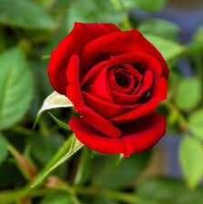
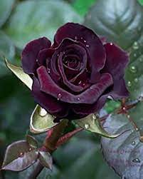
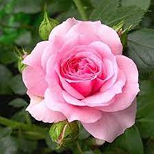
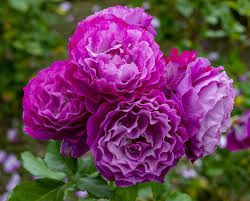
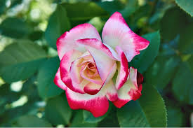

Hello World!
To Do
Buy some cookies
Varieties of Roses

Google
Search
Read
More
Note:Spaces between words should br replaced by %20 ensure that the browser will display the
text correctly
Roses




Roses are a type of flower that comes from the Rosa plant family. They are very popular and are known for
their beautiful colors and lovely scent. Roses can be found all over the world
and areoften given as
gifts to show love or friendship.
There are many different types of roses, ranging from small ones to large
ones, and they
Grandifloras produce full-blossomed flowers growing on tall hardy bushes.
Among the other classes of modern roses are climbing roses.
Whose slender stems can be trained to ascend trellises; shrub roses, which
develop
into large bushes; and miniature roses,
which are pygmy-sized plants bearing tiny blossoms.
Altogether there
are thousands of identifiable
varieties of roses in those and other classes.